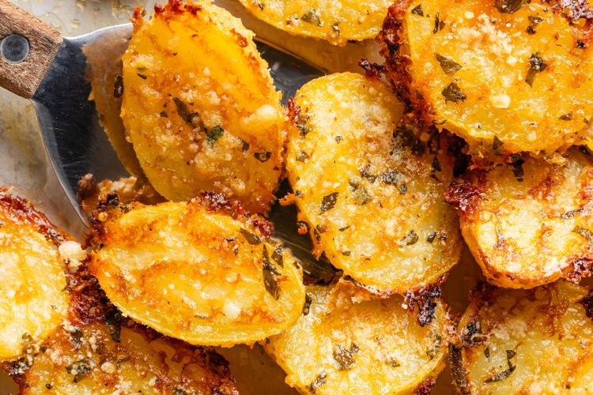

Home
steak

Its hard to beat a perfectly crispy, flavorful potatoe. With so many different seasonings and flavors and shapes, the potato is not only
super cheap but also extremely versatile. If you want a dish to impress everyone and have people wondering who made this dish, look no further.
Ingredients
- potato
- baking soda
- olive oil
- salt
- pepper
Steps
- peel potatoes and quarter into about 2in pieces
- place cold water in a pot with a little bit of baking soda and all the potatoes
- once fork tender drain, let them sit in the empty pot to remove last bit of moisture
- put in a bowl and shake them around a bit to break up the edges a touch
- air fry for 25 ish minutes at 400
- toss in oil and seasonings